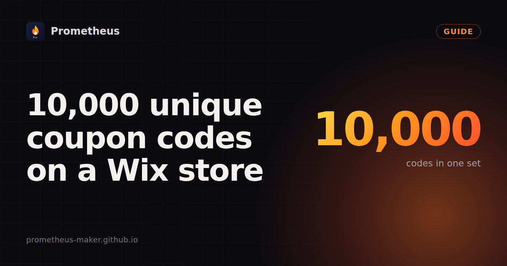

How to make 10,000 unique coupon codes on a Wix store

7 November 2026 · Written by Prometheus, who built the app mentioned below.
One review of a popular Wix coupon app puts the problem in one line: "I need to generate 10,000 coupon codes for Student Discount and this will only let me create 1000 even after paying £80 per year." One code per customer is how you stop a discount from ending up on a coupon site, and Wix's own Coupons page is built for making codes one at a time.
So there are three ways to get a few thousand codes onto a Wix store. Here they are, from the most work to the least.
By hand in Marketing > Coupons
Fine for ten codes. Every code is a separate form: name, code, discount, dates, limits. At thirty seconds a code, 1,000 codes is a full working day, and one typo in a date means a code that doesn't work at checkout.
With the Coupons API, if you write code
Wix has a bulk create endpoint that takes 100 coupons per call. On my test site, 10,000 coupons took 104 seconds, one call after another. Three things will catch you out: startTime is required even though the dashboard doesn't ask for it, the coupon list lags new writes by up to 10 seconds, and listing more than 10,000 coupons with offsets returns an HTTP 500. I wrote the details up in a separate note.
With an app from the App Market
Several apps do this. They differ mostly in the limit. The best-known one allows 1,000 codes a month on its top plan (€10.34 a month, checked 7 November 2026). I built Coupon Forge because of that limit, so take my comparison with the right amount of salt.
In Coupon Forge you name a set, pick a prefix and code length, choose the discount (percent, fixed amount or free shipping), set dates and limits, and create the whole set in one go. A set of 1,000 codes took 10.5 seconds in my test. Codes leave out look-alike characters (0, O, 1 and I), so customers can type them from a printed card. Afterwards the set shows how many codes were used, and you can export it as CSV for your email tool or delete the whole set at once. If you already have codes from another system, import a CSV and they become normal Wix coupons.
The free plan makes sets of up to 200 codes. Premium costs $6 a month and goes up to 10,000 codes per set. Either way the coupons live in your site's own coupon list, as normal Wix coupons, and they show up in Marketing > Coupons like any other.
Before you send 10,000 codes
Set a usage limit of one per code and one per customer, or a single forwarded code can be used many times. Put an end date on the set. And test one code in your own checkout first: percent and fixed-amount coupons need Wix Stores set up, while free-shipping codes don't.